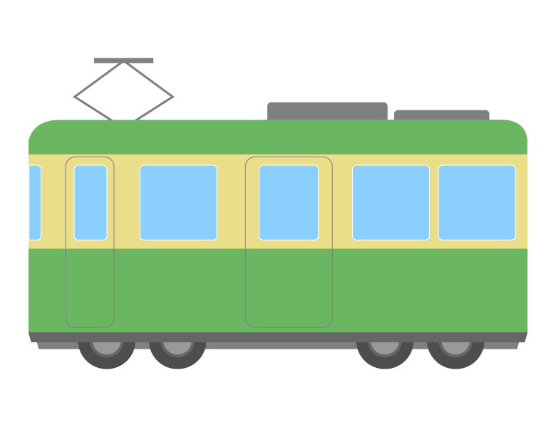
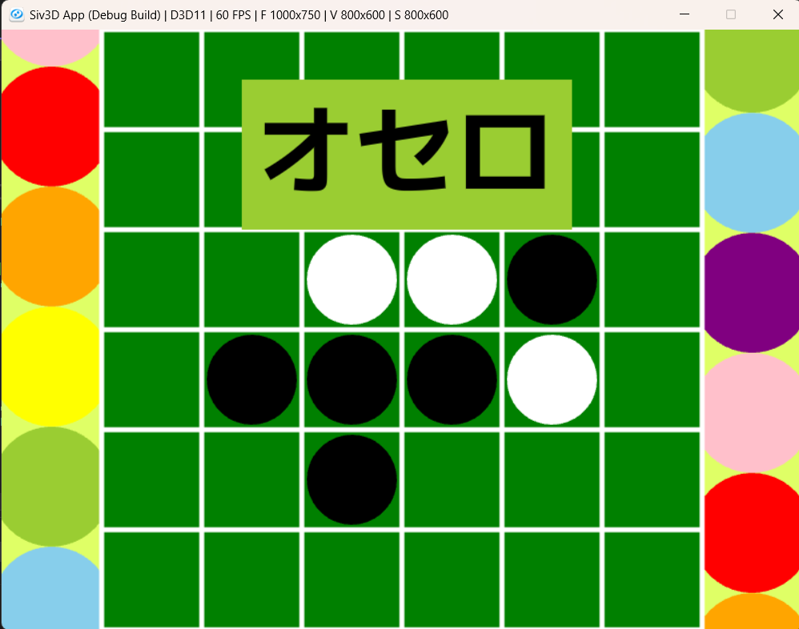
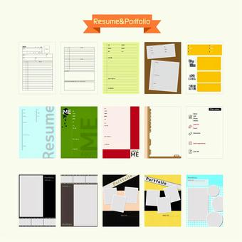

ABOUT
NAME: 名古田 真唯（ナゴダ マイ）
PROFESSION: 高専生（大阪府立工業高等専門学校）（4年生）
CAREER
2022/4: 大阪府立工業高等専門学校（大阪高専）入学
2023/4: 知能情報コースに入る
2023/12: 総合課題実験実習1で電車寝過ごし防止アプリを作成
2025/3: 高専テクノゼミが主催する街づくりのイベントで梅田ダンジョン攻略システムを作成
WORKS
今までに作成したプログラムを掲載しています。写真をクリックすることでそのコードをGithub上でご覧いただけます。
①現在、電車での寝過ごしアプリをandroidstudioで作成しています。
②二年生の高専祭では、5人で分担してオセロのゲームを作成しました。主にゲームのスタート画面を担当しました。
③このポートフォリオのコードが掲載されています。
⑤タイトル…金のなる木
制作時期…2024年1月
キャラクターを操作して、水を汲み、金のなる木を育ててお金を集めてポイントと交換して、王冠をげっとするゲームを作りました。操作ボタンは、上はW、右はD、左はA、下はSです。まず、水のイラストのところの下にキャラクターを持っていくと、持っている水の量が増えます。そして、木の近くの赤ボタンのところに行くと、木が育ち始めます。そして、木が完全に育った後は、所持金が増えていきます。また、所持金が一定数以上になると新しいボタンが出現します。その左側に立つと、100円と1ポイントが交換されます。ポイントが5ポイントたまると、画面右下に王冠の絵が出てきます。
コードの載っているgithubリンクhttps://github.com/nago4/-----------
⑦タイトル…文房具育成ゲーム
制作時期…2024年2月
制作時間…約20時間
このアプリケーションは所持している文房具キャラを使って文房具の敵を倒し、ゲットした報酬でガチャを回し、文房具キャラを強くしていくゲームです。持っている文房具は「詳細を確認するキャラ」や「攻撃を行うキャラ」から確認することができます。文房具と戦うためには、まず最初に「攻撃を行うキャラ」からキャラを選び、上の「戦闘の難易度」のところから難しさを選ぶことで戦闘を行うことができます。勝利すると、所持金が増えます。この所持金はガチャで使うことができます。ガチャで引いた文房具と持っている文房具で同じのものは、「Lv」「攻撃力」「hp」が上昇します。
コードの載っているgithubリンクhttps://github.com/nago4/--9
⑧タイトル…カテゴリ別投稿アプリ
制作時期…2025年1～2月
制作時間…約20時間
本アプリは主な内容としてはブログアプリです。ユーザー登録をした人は記事やカテゴリの追加、編集、削除を行なうことができ、ユーザー登録をしていない人は投稿された記事を見ることだけできます。 最初、カテゴリがいくつか表示されており、見たいカテゴリをクリックするとそのカテゴリを含んだ投稿記事一覧が表示されるようになっています。 公開URL: https://next-blog-app-khf1.vercel.app/
コードの載っているgithubリンクhttps://github.com/nago4/next-blog-app?tab=readme-ov-file

SKIL
プログラミング言語・ツール
Python…学校の授業で触れました。
Java…電車の寝過ごしアプリを作成する際に使用しています。
C++…オセロのゲームのスタート画面を作成する際に触れました。
androidstudio…電車の寝過ごし防止アプリを作成する際に使用しています。
HTML/CSS…ポートフォリオを作成する際に使用しています。
JavaScript…ポートフォリオを作成する際に使用しています。
Next.js…カテゴリ別投稿アプリを作成する際に使用しています。
Vercel…カテゴリ別投稿アプリを作成する際に使用しています。
Github…ポートフォリオやアプリのコードを載せています。
VSCode…ポートフォリオやアプリのコードを作成する際に使用しています。
CONTACT
Gmailは以下の通りです。
mait52785@gmail.com